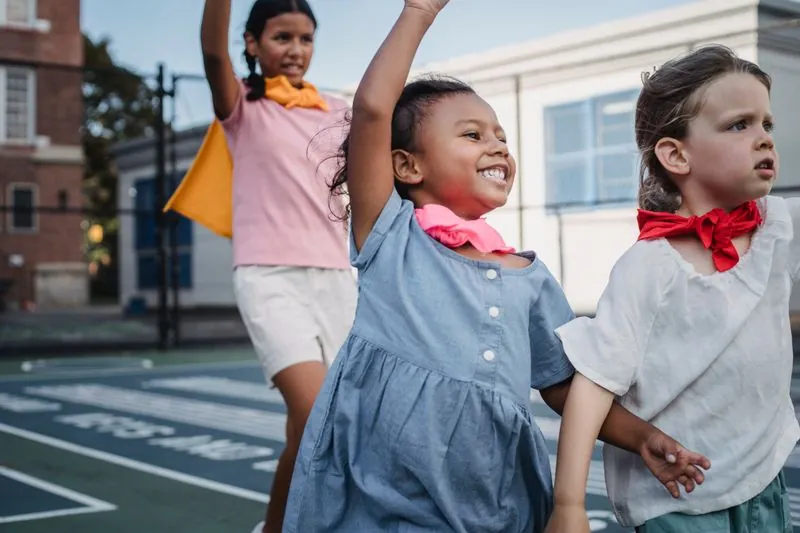

Si Kecil Dilatih
Berpikir Kritis
Si kecil belajar dengan Kurikulum Nasional dan Internasional.
Dua Kurikulum Berjalan Bersama
Kurikulum Nasional dan Pearson Edexcel iPrimary.
Kurikulum Nasional
Si kecil mengikuti standar kelulusan nasional.
Pearson Edexcel iPrimary
Kurikulum Pearson Edexcel iPrimary berbahasa Inggris untuk mata pelajaran English, Science, dan Computing.
Tiga Core Values
Budi Pekerti, Trilingual, dan STEAM.
Budi Pekerti
Si kecil dibiasakan menerapkan 10 Nilai Moral dan nilai Di Zi Gui dalam keseharian, misalnya bersikap dapat dipercaya dan disiplin.
Lihat Budi PekertiTrilingual
Si kecil dilatih menggunakan Bahasa Mandarin, Inggris, dan Indonesia. Di SD, porsi Bahasa Mandarin 42%.
Lihat TrilingualFramework Singapura untuk Matematika
Matematika memakai Framework Singapura untuk Matematika dan Six Elements of Teaching dari Dr. Yeap Ban Har. Si kecil belajar bertahap, dari benda nyata ke simbol (CPA).
-
Concrete (Benda Nyata)
Si kecil mengenal konsep lewat benda nyata.
-
Pictorial (Gambar)
Konsep digambarkan lewat gambar atau diagram.
-
Abstract (Simbol)
Si kecil memakai angka dan simbol matematika.
Soal cerita
Andi punya 3 kelereng. Budi punya 2 kelereng lebih banyak. Berapa kelereng Budi?
Kegiatan STEAM
Si kecil belajar lewat praktik langsung.
Pembelajaran Sains
Si kecil mengenal sains lewat pengamatan langsung.
Laboratorium Komputer
Tempat si kecil belajar Computing.
Roof Garden
Tempat belajar tentang alam dan lingkungan.
Fasilitas SD
Fasilitas yang lengkap untuk kegiatan si kecil.
Ruang Kelas
Memakai sirkulasi udara alami, tanpa pendingin ruangan.

Kolam Renang
Tempat si kecil belajar berenang.

Lapangan Olahraga
Tempat si kecil berolahraga dan bergerak.
Biaya SD
Uang Pangkal SD mencakup masa belajar si kecil selama enam tahun, sampai lulus SD. Untuk rincian biaya, silakan hubungi tim admisi kami.
Program Keluarga (Siblings)
Keringanan Biaya Pendidikan bagi keluarga dengan lebih dari satu anak.